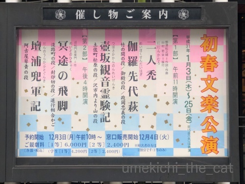

今年は加湿器を出してみた [梅吉]
このところ空気の乾燥が激しいので3年ぶりに加湿器を出してみました。

気化式の加湿器です。買ったのは10年くらい前かな。
加湿力はあまり高く無いのですが自然に潤う感じ？
中は単純な作りですよ。本体＝容器に水を満たして白いローラーを入れます。
フタ部分にファンがついていて風圧でローラーが回転して水が気化していきます。
ローラーは洗浄液につけて洗えば良いし本体は細かいパーツがないので
隅々まで洗えてお手入れが楽です。
フタ部分、本体の隙間から中の水とローラーが見えます。
・・・・・これが問題でして〜(^_^;)

幼い頃に一度見たことがあるっきりなのでほぼ初対面と言えるでしょう。
めっちゃへっぴり腰です(*>艸<)
なぜ一度見たきりかというと・・・ご想像通りです！
隙間から見える水と（梅吉は水が好き）ゆっくり回転するローラーが気になって気になって・・・
幼い梅吉はフタを頭で押しのけ中に手を突っ込んであたりを水浸しにしたのでしたw
以降加湿器は封印。

じーっと見てます。フタ、押しのけますか？

蹴り倒されるかと思いましたが無事でした。
これ以降は興味を示すことはなく加湿器と梅吉は共存しております＾＾
加湿器、あるのと無いのでは全然違いますねー。
今の所窓の結露にも影響は無いし、梅吉にいたずらもされないし早く出せば良かったわ。
みなさんは加湿器あるいは空気清浄機のようなものお使いですか？
（長いのでスルーしてくださいませ）
先日新春文楽公演に行ってきました。

鑑賞したのは二部の『冥途の飛脚』淡路町の段、封印切の段、道行相合かご
『壇浦兜軍記』阿古屋琴責の段 です。
入り口には大きな門松が二つ。お正月らしく華やかな雰囲気です。
（門松の後ろに写っているポスターの人形が後に登場する阿古屋：あこやさんです。）
演目の方ですが『冥途の飛脚』は
遊女に入れあげた主人公が養子に迎えられた飛脚問屋の売り上げを使い込み
挙句には返すはずだった借金で遊女を身請けし二人で逃げ落ちるお話、です。
実話ベースなんですって。
私はこの手の筋書きがあまり好きではないので感想は割愛w
遊女の名前が「梅川」だったのには梅つながりでちょっと反応しちゃいましたが。
でも「川さん」って呼ばれてたな・・・
面白かったのが楽器の演奏と人形の豪奢な出で立ちが見せ場の『壇浦兜軍記』です。
壇ノ浦の合戦後の世。戦いに敗れた平家の残党景清が源頼朝の暗殺を企て逃亡。
その行方を探るため情人である遊女の阿古屋（あこや）が詮議にかけられます。
拷問を受けても口を割らない阿古屋に差し出されたのが琴・三味線・胡弓。
景清の行方を知らないとの言い分に嘘偽りがないならば心に乱れはないはず。
ならば音に乱れなくこれらの楽器を弾いてみよ、と。
阿古屋は見事に弾きこなし無罪放免となります。
阿古屋の衣装＆装飾品が本当に豪華で素晴らしい。
振り向いて着物が翻る様が見せ場の一つの様で
通の方々はここで拍手をされていましたよ。
楽器の演奏の場面はまるで浄瑠璃人形が本当に弾いているかのように三味線方と一体化。
人形が楽器を奏でる指や手首の角度が音とぴたりと合っています。
（人形の右手と左手は違う人形遣いが操ります。）
音色も阿古屋の心情を表すように高く低く冴え冴えと響いていました。
阿古屋の演奏の見事さに侍の一人が思わず「エア琵琶」を弾いてしまう
お茶目な場面もあるんですよ(≧▽≦)
この音色、解説などでは「私は潔白なのになぜ信じてくれないの！」と表している
と言われていますが
私には情人・景清の行方を知られまい、隠そうとする阿古屋の意地に聞こえました。
詮議する方もそれを分かった上で、見事に弾きこなした阿古屋あっぱれと
無罪放免にしたのではないかと。
こんな解釈も楽しいのでは？
今回この琴・三味線・胡弓をひとりで演奏したのが鶴澤寛太郎さん。
文楽三味線のホープなんですねー。
お名前覚えておかなくちゃ。
阿古屋を遣っていたのが（頭と右手）三代目桐竹勘十郎さん。
阿古屋なら「東は（坂東）玉三郎、西は勘十郎」と並び称される方なんですって。
文楽劇場の舞台はこんな風になってます。
こちらは太夫・三味線が出てくる回舞台。ぐるんと回転して出てきますよw
なぜか食い倒れ太郎の人形が！
ちゃんと浄瑠璃人形として使えるようになっていました(≧▽≦)

カフェオレ色の梅吉

梅吉 2023年8月10日 永眠


梅吉と出会った譲渡会

犬猫の理由なき殺処分ゼロ
妄想広告
UMEKICHI 光

爆発的に早い！
時々攻撃的！
Thanks to Mr.Boss365
爆発的に早い！
時々攻撃的！
Thanks to Mr.Boss365

加湿器は一時期色々なタイプを買い換えてました。加湿能力がイマイチだったりカビに悩んだりで納得いかず、置き場所の問題もありました。今は加湿機能付き空気清浄機に落ち着き、加湿器単体より加湿能力も高く良い感じです。
by zombiekong (2019-01-21 01:20)
加湿器！
毎年出しているのですが、今年はなんとなく乾燥感がなくて
部屋に置いて、そのままです。（職場のも・・・）
加湿器は、個人的に、暑いフシャーッ！てのが出ないと
なんとなく満足できません^^;
おこちゃま時代の梅さまには楽しい「おもちゃ」だったのでしょうね。
舞台、お正月感もありますね。めでたい亥？
ところで、太郎さん！何頭身！？
by Ja-Kou66 (2019-01-21 01:49)
空気清浄機、結露が出るのがイヤで水を入れずに
使っているけど、水入れた方がいいのかなあ？
by yumibaba (2019-01-21 04:57)
我が家はストーブの上にやかんです＾＾
by ぽちの輔 (2019-01-21 06:43)
梅吉さん、大人になったんですね♪( ´▽｀)
大御所が我が家に来るのが決まった時に
加湿器を買いました＾＾
上に乗っても安全で、隙間から子猫でも手を入れられないように・・・云々
色々考えて確か５万円超えの買い物でした(°_°)→お猫様のためならw
が、お猫様の循環式水飲み場所を２か所設定した結果、
加湿器は「湿度充分」と働かなくなりました( T_T)
で、私の実家に引き取られました(⌒-⌒; )
by ニッキー (2019-01-21 07:58)
今年は乾燥が激しいので加湿器は必須ですね！
リビングと寝室に加湿器置いていますが、寝室は寝ていて喉が渇かないのが良いです(^^)
by ma2ma2 (2019-01-21 08:06)
加湿器！我が家も毎年使ってます♪
一度、加熱式を買いましたが
ちょいとやりすぎて天井から
水がポタポタと(;^_^A
梅吉さん♪ 大人になりましたね♪
でも一応確認は必要ですよね(#^.^#)
by きぃ (2019-01-21 08:34)
文楽劇場なんて中学生のころ、鑑賞会で行ったきり。
もう50年近くになる？(^_^;)
人形が三味線弾くシーンがあるのね。
そういう技も多くの人に知られることなく
続いてきたのですよね。
若い人とかは多分興味を持つ人は少ないやろうし、
今後50年後には、どうなってるのかなー。。。
by よーちゃん (2019-01-21 08:56)
おはようございます。
梅吉君が加湿器に乗った状況は、小生でもヒヤヒヤします。
共存おめでとうございます。梅吉君には、過失（加湿）なく無罪放免です？
スルーしようと思い「↑ガブッと一押し↑」しましたが・・・
「梅つながり」で小生も反応。
文楽、生で見た事ありません。テレビでは視聴あり程度です。
音に乱れなく演奏・楽器が出来て無罪放免は、納得出来そうで疑問を多少感じます。
解釈の仕方も面白いですね。
浄瑠璃人形の食い倒れ太郎？人気出そうな予感！？(=^･ｪ･^=)
by Boss365 (2019-01-21 10:39)
卓上の加湿器を買ったけど、やっぱりそれでは効果がイマイチで。
このくらい大きいのが必要かなーって思い始めてます。
ふふふ、梅吉君、今回は最初だけで
あとは大人の対応（興味を失う）をしたのね^^
壇ノ浦の合戦後の世。うー、それはうずうずしちゃうよ！！
楽しそうだな～～
文楽、やっぱり足を踏み入れてみたい世界だわ。
by リュカ (2019-01-21 11:25)
加湿機能付きの空気清浄機、リビングと寝室い１台ずつ置いてます。
こてつは何故か子猫の頃から空気清浄機の前に座ってず～っと見つめていることがよくありました。
一度、隣の部屋へ運んだら猛然とダッシュ＆飛び掛かられたことがあり、もしかすると子猫の頃、本体に移る自分の姿を兄弟猫だと思って眺めてたのかな？なんて考えるとちょっぴり切なくなりました。
今も水切れの音がピピッとなると、どこにいてもすっ飛んで来ます(^▽^;)
文楽は体験教室みたいなイベントに参加して、人形を持たせてもらったことあります。めっちゃ重いです(≧▽≦)
by ゆきち (2019-01-21 12:52)
はい、毎冬、加湿器を使っていますよ～。
猫さんが居た時も使っていましたが、
全く興味を示しませんでした（笑）
by angie17 (2019-01-21 16:02)
乾ききらない洗濯物を部屋にかけておくスタイルで湿度は60％～65％保っております(*^_^*)これで加湿器入れたら湿度高過ぎなので入れてません。以前マンションに住んでいた頃の方が乾燥してたなぁ(>_<)
by palpal (2019-01-21 17:22)
ウチは加湿機能付空気清浄機3台稼働中ですが、最近加湿機能は使ってません。
結露するまでもなく、カラッカラで変わらないから:-)
by tama (2019-01-21 17:56)
今の時期は乾燥が激しいですね。毎日火事のニュースが報道されてますが気を付けたいですね。
こちらで加湿器は必需品となってます。インフルエンザや風邪の予防にもなりますからね。
でも、梅吉さんの食いつきはステキですね！中で動いている水が気になるんですね(^^)
by kou (2019-01-21 18:48)
梅吉さん、へっぴり腰～興味津々だけど、ちょっと大人の対応？
「これなんや？」って聞いてくるお顔も可愛い＾＾
いぜんは加湿器も清浄機も使っていましたが、今は洗濯物を干したり、干さないときはあちこちに水や濡れたタオルをおいたり、で普段は済ませてます。ヒーターで清浄機にもなるのがあるので、たまに使ってます＾＾
文楽！本場ですね～。
地方巡業というのか、年に一度ぐらい近くで３日ほど上演するので行ったことがありますよ。本当にお人形ということを忘れるような動きで引き込まれますね。
「阿古屋琴責」は玉三郎の舞台を見たことがあります。何年も琴・三味線・胡弓の修練を重ねてのこと。演奏も美しさも気迫も素晴らしかったです。
by sana (2019-01-21 20:55)
お手手チョイチョイが可愛い♪ ^^)
加湿器、買ったのに水を足すのが面倒で
結局使ってません。。。^^;←ﾒﾝﾄﾞｸｻｶﾞﾘﾔ
by yes_hama (2019-01-21 21:29)
梅吉さん、大人になったのですね。
それでも、念入りに点検作業、ご苦労様です（笑）
職人梅吉さんの、後ろ姿が良いですね。
我が家はガスストーブですから加湿器は使用していません。
空気清浄機は玄関横の倉庫で動いてます。
この倉庫は引っ越してきたときから湿気ぽくて、
空気清浄機で空気を循環させています。
人形浄瑠璃は観たことないです。
歩いて30分くらい、近いのですけど（笑）
by kiki (2019-01-21 21:55)
梅吉さんの反応が途中から落ち着いてしまったのが
何とも。。。もの足りない、もっとはじけて～(笑
文楽渋いですね。まだ一度も観たことありませんが
深い考察あっぱれでございます。
古典落語やこういう人形浄瑠璃みたいな世界では不倫、駆け落ち物が
多いですね。今でいう所のワイドショーの芸能人のスキャンダル？
的な要素があるのかしら。
by marimo (2019-01-21 22:49)
ローラー君はなぜに
ローラー心をとじて
ローラーぼくの前でそんなに回るの
今 君を救うのは目の前のぼくだけさ
命も心もこの愛も捧げる～ローラー
（ﾟ□ﾟ）
by 英ちゃん (2019-01-21 23:38)
梅吉さん、共存えらいにゃあ^^
by ニコニコファイト (2019-01-22 06:53)
のぞき込んだり、上に乗ったり。おかーさんに問いかけたり。
梅吉くん、考えてますね(≧▽≦)
家は私の部屋とリビングは空清入れっぱなしですｗ
文楽はTVでしかみたことがないの。きっと圧倒されちゃう(*^-^*)
by emi (2019-01-23 15:50)
zombiekongさん＞
加湿機能付き空気清浄機なんて高性能のマシーンがあるのですね！
私が色々探した10年前にはあったのかしら・・・
加湿器はとにかくカビの発生しないタイプをと探しました。
花粉症になっちゃったら空気清浄機付きも検討してみまーす＾＾
Ja-Kou66さん＞
本格的な冬になってからまともな雨が降ってないので
大阪は空気がめちゃめちゃ乾燥してます。
お洗濯ものがよく乾いて良いのですがお顔もパリパリで(⌒-⌒;
なので私も加湿器は暑いフシャーッ！が希望なんですが
（なにげに近くに顔を寄せるw）
うちの息子さんが覗き込みそうなので無理そうですw
太郎さんは大谷（翔平）くんもびっくりのスタイルですよね！
実は、ハーフとか！？
yumibabaさん＞
私も結露と梅吉のいたずらが心配で数年間出していませんでした（笑）
今の所結露も大丈夫。
何より良かったのが梅吉を触っても静電気が起きなくなったことです。
去年まではお鼻をさわって「ぱちっ」となって恨まれていたんですけど・・・
さんちゃんさんは静電気大丈夫ですか？
ぽちの輔さん＞
ストーブ＋やかんが一番の理想でーす！
お湯を沸かさなくても良いし＾＾
ニッキーさん＞
清水舞台のお買い物、そのような結末を迎えるとはw
がしかし！
循環式水飲みが加湿に役立ったとは一石二鳥でしたね＾＾
我が家も設置・・・と言いたいところですが
加湿器には大人対応の梅吉でも
循環式水飲みは絶対におもちゃにするので残念ながら却下です(-_-メ)
ma2ma2さん＞
加湿器、寝室に置くのも良いですね＾＾
風邪の予防にもなりそうです！
うちは口を開けて寝る人がいるので特にwww
きぃさん＞
天井からポタポタ、わかります！
私はカーペットがじんわり湿って
カビが生えそうになった事があったので
強加湿のものは避けるようにしましたw
梅吉が確認作業までしなくなったら
「具合が悪い！？」と病院に走りそうです(⌒-⌒;
よーちゃん＞
鑑賞会でご覧になる機会があったのですね！
でも中学生に興味を持てっていうのも難しいような・・・
私が中学生の時見ていたら友達としゃべっていたか
寝ていたかどっちかだと思いますw
橋下市長（府知事？）時代に助成金を打ち切られそうになってから
文楽も積極的に宣伝活動や啓蒙活動をしているようですが
なかなか難しいようで・・・
歌舞伎は上手いことやっているのに違いはなんなんでしょ。
でも大阪が生んだ伝統芸能、頑張って伝えていって欲しいです！
Boss365さん＞
加湿＝過失！上手い！！座布団10枚です0(≧▽≦)0
いよっ！まってましたぁ〜。たっぷりとー！！
（って文楽では大向こうが掛かりますw）
梅吉はやましいことがなくてもいつも行動は乱れっぱなし〜(*>艸<)
乱れなく演奏＝無罪放免、確かに突っ込みどころ満載のお裁きですよね。
が、文楽は（歌舞伎もそうだと思いますが）話の流れが極端です。
親に結婚を反対される＝死ぬ、濡れ衣を着せられる＝死ぬ、みたいな。
極端な話の流れで世の物議を醸すことが
近松の狙いだったんじゃないかなぁなんて思ってしまいます。
話題になってお客さんを呼ぶ手法？
商人じゃなくても商売上手なのが浪速っ子でしょうか＾＾
リュカさん＞
ハクション大魔王では物足りなくなってきましたか？
私は洗濯物の室内干しと加湿器でこの冬を乗り切れそうです。
みなさんからのコメントでは
加湿機能付き空気清浄機の評判がよろしいような・・・
花粉症になっちゃったら私も考えてみようかなって思ってます。
文楽、なかなか楽しいですよー。
東京だと国立劇場で定期的にやってます。ぜひ！
ゆきちさん＞
空気清浄機へのこてつくんの反応を想像して
きゅ〜んと切なくなりました・・・
こてつくんには命あるものに見えていたのかな；；
加湿機能付きの空気清浄機は評判が良いですね！
うちには空気清浄機がないのでエアコンのプラズマクラスターで代用。
花粉症になっちゃったら買い替えを考えてみようかしら・・・
文楽人形！わぁ〜持ってみたいです(≧▽≦)
しかし、食い倒れくんみて思ったのですが結構でかい・・・
文楽人形私とだとほぼ同じ大きさかもしれませんw
中に入って操作するか・・・(-_-メ)
by ちぃ (2019-01-23 16:35)
angie17さん＞
お・と・な猫さんですねー0(≧▽≦)0
梅吉は永遠の少年なので（笑）
いつまた加湿器に興味を持つかと
実はこっそり心配しております(⌒-⌒;
palpalさん＞
マンションって乾燥するのかしら・・・
うちも冬はエアコン直下に洗濯物を干してるんですが
プラス加湿器でもやっと湿度40％くらいw
お顔ぱりぱりー；；
tamaさん＞
うちも湿度めっちゃ低いですw
異様に乾燥する家ってあるのかしら・・・
でも結露もするのwなんでだろう(-_-メ)
kouさん＞
関西でも毎日のように火事のニュースを見ます。
うちは火を使う暖房器具はないのですが
マンションなので「まわりの家、気ぃつけてや〜」って思ってますw
加湿器のお水を変えるたび梅吉がじーっと見ているので
いつまたいたずらし始めるか・・・ってちょっとドキドキしてます(⌒-⌒;
sanaさん＞
わたしも洗濯物は家の中、エアコン直下に干してます。
プラス加湿器でやっと湿度が30〜40％くらいです。
ウチって砂漠？(*>艸<)
加湿器を使い始めて良かったことは静電気があまり起きないこと。
梅吉の鼻先でパチっとなって恨まれることが無くなりました＾＾
玉三郎の阿古屋をご覧になったことがある！
それは羨ましいです！！
阿古屋を演じたい一心で精進したって記事を見たことがあります。
近日京都南座でその阿古屋を玉三郎が演じるんですが
年齢的なことなどで阿古屋も最後になるかも・・・なんて話も出ているそうです。
私は歌舞伎には疎いんですが
玉三郎以外に阿古屋を演じられるような女形育っているのかしら・・・
yes_hamaさん＞
加湿器、
お手入れだったりお水を入れるの面倒なのわかります！
私は冷蔵庫の製氷機がそれです！！
大阪では夏場は氷がないと凌げませんが
札幌時代は良く氷を切らしてましたwww
kikiさん＞
点検作業までしなくなったらブログネタが無くなっちゃうし（笑）
具合が悪いんじゃないかと病院に走りそうです(*>艸<)
ガスストーブも暖かそうですね！
家にやんちゃ坊主がいてもガスストーブは大丈夫かしら・・・w
人形浄瑠璃、なかなか面白いですよ＾＾
ぜひ一度ご覧になってみてください！
お誕生日に手術を受ける事が出来たのは「定め」と感じました。
どうぞ心身ともにご自愛なさってくださいね。
『鎌八幡』は年始の七福神参りの時に毎年前を通ってます。
人との縁切りしか思いつきませんでした。覚えておきますm(_ _)m
なおみちゃんvsプリュシコバ頑張っていますね！
by ちぃ (2019-01-24 15:00)
marimoさん＞
北海道弁で変なテンションではしゃいだり騒いだりすることを
「おだつ」って言うんですが・・・
幼い頃はお立ちっぱなしだった梅吉も
この頃はずいぶん落ち着いて（梅吉比w）。
でも、スルーではなくてとりあえず絡んでくれて良かったです(≧▽≦)
文楽、面白いんですよ〜＾＾
歌舞伎役者ができないようなことでもお人形ならできます！
衣装の早変わり・変化も得意です。
内容はまさしくワイドショーだと思います。
それではVTRで再現してみました、的な(*>艸<)
英ちゃんさん＞
私はとある野球イベントで
秀樹の生歌でYMCAを踊った事があります！（自慢www）
ニコニコファイトさん＞
ちゃんと仲良くしてますよー＾＾
emiさん＞
容器に水を張っている時ちょっかい出してきたので
いや〜な予感がよぎったんだけど・・・
少年はこうして大人になりましたよ(*>艸<)
っていつまた興味を持つんじゃないかとドキドキもありますw
文楽は私もテレビで見たことあるけど・・・寝ちゃいました(⌒-⌒;
やっぱり生は迫力＆雰囲気で魅せてくれます！！
by ちぃ (2019-01-24 15:42)